2．代数不变量理论
我们已经指出，通过坐标表示来确定要表示的与要研究的图形的几何性质，需要识别在坐标变换下保持不变的那些代数表达式。另外看到，用线性变换把一个图形变到另一个的射影变换保持图形的某些性质不变。代数不变量代表这些不变的几何性质。
代数不变量的问题先前产生于数论（第34章第5节），特别在研究二元二次型
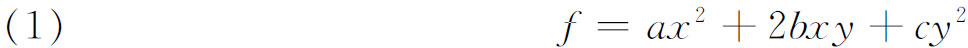
在x与y用线性变换T变换时是如何变换的，这里的T即
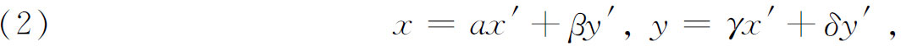
其中
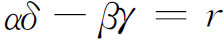
。将T应用于f得出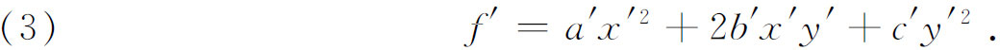
在数论中，a，b，c，α，β，γ诸量都是整数，且r＝1。然而，一般地说f的判别式D满足关系式
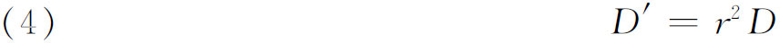
是正确的。
射影几何的线性变换更一般些，因为二次型和变换的系数不限于整数。代数不变量一词用来把这更一般的线性变换下产生的不变量区别于数论中的模不变量，且就此而言，区别于黎曼几何的微分不变量。
讨论代数不变量的历史需要一些定义。单变量的n次型
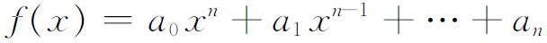
在齐次坐标中变成二元型
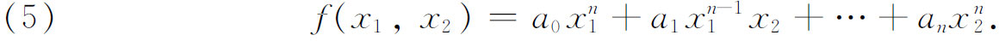
三个变量的叫三元型；四个变量的叫四元型等。下面定义适用于n个变量的型。
设二元型受到（2）式的变换T。在T下型f（x1，x2）变换到型
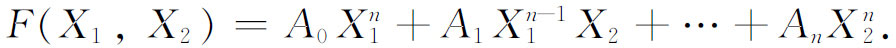
F的系数将与f的不同，F＝0的根将与f＝0的根不同。f的系数的任何函数I如果满足关系式
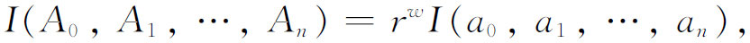
就称为f的一个不变量。若w＝0，此不变量称为f的绝对不变量。不变量的次数是系数的次数且权数是w。二次型的判别式是一个不变量，如（4）所示。这时次数是2，权数是2。任一多项式方程f（x）＝0的判别式的意义在于，它等于零就是f（x）＝0有等根的条件，或者从几何上讲，f（x）＝0的轨迹（这是一系列的点）有两个重合点。这个性质显然与坐标系无关。
若两个（或多个）二元型
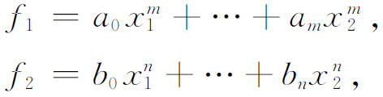
由T变换成
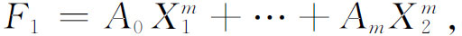
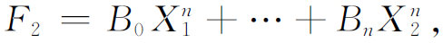
则系数的任何函数I如果满足关系式
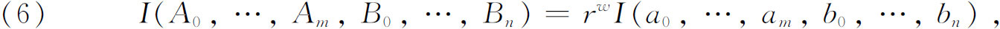
就叫做两个型的联合不变量。例如，线性型
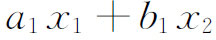
与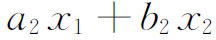
以两式的结式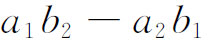
作为联合不变量。从几何上讲，结式等于零意味着两式表示相同的点（齐次坐标）。两个二次型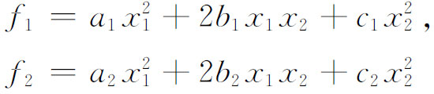
有一个联合不变量
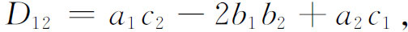
它的等于零表示f1与f2代表调和点偶。
除去单个型与一组型的不变量之外，还有协变量。f的系数与变量的任何函数C，若除去T的模数（行列式）的乘幂外是T下的不变量，则称它为f的协变量。于是，二元型的一个协变量满足关系式
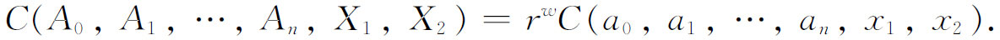
绝对协变量和联合协变量的定义与不变量的定义类似。协变量中系数的次数叫做它的次数，而其变量的次数叫做它的阶数。这样，不变量就是零阶的协变量。然而，有时不变量一词用于狭义的不变量或协变量。
f的一个协变量代表某一图形，它不仅相关于f而且射影相关于f。例如两个二元二次型
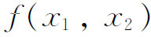
与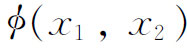
的雅可比行列式，即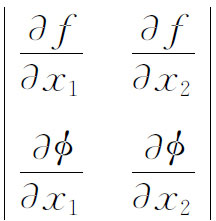
是两个型的权为1的联合协变量。从几何上讲，令雅可比行列式等于零就代表一对点，它与原来f与φ所代表的每一对点都是调和的。调和性质是射影性质。
黑塞引进的黑塞行列式(1)
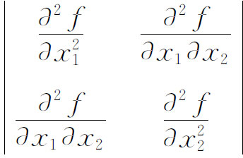
是权2的协变量，它的几何意义过于复杂，这里限于篇幅，不详细介绍（参看第35章第5节）。黑塞行列式的概念和它的协变性适用于n元的任何型。
代数不变量的工作由布尔（George Boole，1815—1864）开始于1841年，他的结果(2)是有局限性的。更值得一提的是凯莱，他为布尔的工作所吸引而研究这个问题，并使詹姆斯·西尔维斯特（James Joseph Sylvester）也对此感兴趣。和他们一起作这研究的还有萨蒙（George Salmon，1819—1904），他是1840年至1866年都柏林三一学院的数学教授，后来成为该校的神学教授。这三人在不变量方面做了如此多的工作，以至埃尔米特（Charles Hermite）在一封信中称他们为不变量三位一体。
1841年凯莱开始发表射影几何在代数方面的数学文章。布尔1841年的文章提示给凯莱以n次齐次函数的不变量的计算法。他称这些不变量为导数，后又称为超行列式；不变量这个名词来自詹姆斯·西尔维斯特(3)。凯莱利用黑塞和艾森斯坦的行列式思想，建立了得出他“导数”的一套技巧。后来从1854年至1878年在《哲学汇刊》（Philosophical Transactions）上发表了10篇关于代数形式的论文(4)。代数形式是他用来称2个、3个或多个变量的齐次多项式的名词。凯莱对不变量的兴趣如此之大，以至使他竟然为不变量而研究不变量。他也发明了一种处理不变量的符号方法。
就二元四次型特例
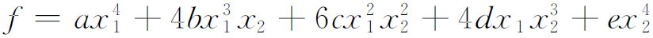
说，凯莱证明黑塞行列式H同f与H的雅可比行列式都是协变量，并证明
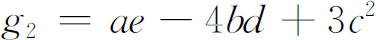
和
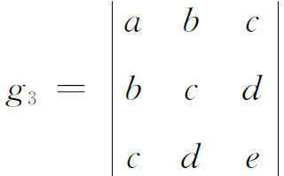
都是不变量。对这些结果，詹姆斯·西尔维斯特和萨蒙又增加了许多。
另一有贡献的人是艾森斯坦，他更关心的是数论，他早就发现二元三次型(5)
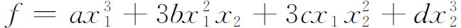
的最简单的二次协变量是它的黑塞行列式H，最简单的不变量是
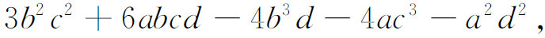
它是二次黑塞行列式，也是f的判别式。又f和H的雅可比行列式是阶数为3的另一协变量。后来，阿龙霍尔德（Siegfried Heinrich Aronhold，1819—1884）在1849年开始研究不变量，写过关于三元三次型不变量的文章(6)。
不变量理论奠基者所碰到的第一个较大的问题是特殊不变量的发现。这大约是从1840年到1870年的工作方向。我们知道，这类函数能够构造出好多来，因为有些不变量如雅可比行列式与黑塞行列式本身也是具有不变量的型，并且因为一些不变量与原来型合在一起成为新的一组型，它们就会有联合不变量。几十个大数学家（包括已经提到过的那几个人），计算过特殊的不变量。
不变量的不断计算引导到不变量理论的较大问题，这是在求得许多特别的或特殊的不变量后引起的；这就是求不变量的完备系。这就意味着对已给数目的变量和次数的一个型，求其最小可能个数的有理整不变量与协变量，使得任何其他的有理整不变量或协变量可以表示成这个完备集合的具数值系数的有理整函数。凯莱证明，艾森斯坦对二元三次式和他自己对二元四次式所求得的不变量与协变量，分别是两种情况下的完备系(7)。对其他种型的完备系的问题尚待解决。
任何给定次数的二元型的基或有限完备系的存在性，首先由戈丹（Paul Gordan，1837—1912）证明，他的大半生都致力于这个问题。他的结果(8)是：每个二元型f（x1，x2）都具有一个以有理整不变量与协变量所组成的有限完备系。戈丹用了克莱布什的定理，故所得结果名为克莱布什-戈丹定理。它的证明冗长而繁难。戈丹还证明了(9)二元型的任何有限组有不变量和协变量的一个有限完备系。戈丹的证明给出如何计算完备系。
在嗣后20年间戈丹的结果得到各种有限的推广。戈丹自己给出三元二次型(10)、三元三次型(11)，以及一组（含两个或三个）三元二次型(12)的完备系。对于特殊的三元四次型
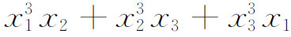
，戈丹给出了54种基本型的完备系(13)。在1886年梅尔滕斯（Franz Mertens，1840—1927）(14)用归纳法再次证明二元型组的戈丹定理。他假设对任一已知二元型组，定理为真，然后证明当组中有一个型的次数增加1时定理必然仍是真的。他没有明显给出独立不变量和协变量的有限集合，但他证明这个集合是存在的。最简单的情况是一个线性型，是归纳法的起点，这种型只有本身乘幂作为它的协变量。
希尔伯特在1885年完成不变量的博士论文(15)后，在1888年(16)又再次证明戈丹的定理，即任何已给二元型组都有不变量与协变量的一个有限完备系。他的证明是梅尔滕斯证明的修正。两个证明都比戈丹的简单得多。但希尔伯特的证明也没有给出求完备系的步骤。
在1888年希尔伯特宣称能用一个完全新的途径来证明如下的问题而引起数学界的惊奇：次数与变量个数为已给的任何型以及任意多个变量的已给型系，都有独立的有理整不变量与协变量的一个有限完备系(17)。新途径的基本思想是暂时忘掉不变量而考虑这样的问题：若有限多个变量的有理整式的一个无穷系为已给，问在什么条件下存在有限多个这样的表达式，即一组基，使所有其他的表达式都可表示成这组基的线性组合，组合的系数是原有变量的有理整函数。回答是总存在。更明确地说，希尔伯特在不变量的结果之前得出的基的定理可叙述如下：代数型就是n个变量的有理齐次整函数，系数在某确定的有理域内（域）。给定了n个变量的任何次的无穷多个型的集合，则存在有限多个（基）
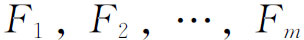
，使得集合中任一型F都可写成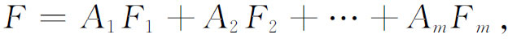
其中
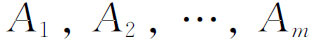
是n个变量（不一定在无穷系中）的适当的型，其系数与无穷系的系数都在同一域内。应用这个定理于不变量与协变量，希尔伯特的结果是：对于任何一个型或一组型，都存在有限多个有理整不变量与协变量，使得每个其他的有理整不变量与协变量都可表示成这有限集合中不变量或协变量的线性组合。不变量与协变量的这个有限集合是不变量的完备系。
希尔伯特的存在性证明比戈丹的基的繁难计算要简单得多，戈丹不由得吭声道：“这不是数学；是神学。”然而在他重新考虑这个问题后说：“我终于相信神学也有其优点。”事实上，他自己简化了希尔伯特的存在性证明(18)。
在19世纪80年代和90年代不变量理论看来已统一了数学的很多领域。这个理论是那个时代的“近世代数”。詹姆斯·西尔维斯特在1864年说(19)：“正如俗语说，条条大道通罗马，所以至少就我自己情况说，代数上的所有研究迟早都要归宿到近世代数的大厦，在其闪闪发光的大门口铭刻着不变量论这几个字。”不久这个理论本身成为研究的目标，而与其来自数论和射影几何的情况无关了。代数不变量的研究者坚持要证明每种类型的代数恒等式，而不管其有无几何意义。麦克斯韦当年在剑桥求学时说过，那里有些人总是用quintics与quantics（五次型与代数型）来看整个宇宙的。
另一方面，19世纪后半叶的物理学家并不注意这个问题。实际上泰特（Peter Guthrie Tait）有一次提到凯莱说：“这样一个杰出的人物把他的才能放在这种完全无用的问题上岂不是遗憾的事吗？”然而这个课题确实直接地或间接地，主要通过微分不变量对物理学产生影响。
尽管在19世纪后半叶有很多热心研究不变量理论的人，但就当时对这门学问所怀抱的希望和所追求的目标来说，它已失去其吸引力。数学家说希尔伯特扼杀了不变量的研究，因为他已处理了所有的问题。希尔伯特确曾在1893年写信给闵可夫斯基说他不愿再研究这个问题了，又在1893年的一篇论文中说，这个理论的最重要的总目标已经达到。然而事实远非如此。希尔伯特的定理没有证明如何计算给定的任何一个或一组型的不变量，因而不能提供个别重要的不变量。探索有几何意义的或有物理意义的特殊不变量仍是很重要的事，甚至对已知次数和已知变量个数的型来作基的计算也可能是一项有价值的工作。
“扼杀”这个19世纪意义下不变量理论的，也正是扼杀过许多一度为人所过分热情追求的其他活动的种种普通因素。数学家是跟着带头人走的。希尔伯特的宣告和他自己放弃这个主题的研究这一事实，对其他人产生很大影响。还有，在许多易于立即得出的结果弄到手之后，重要特殊不变量的计算就变得更加困难了。
不变量的计算并没有随着希尔伯特的工作而告结束。埃米·诺特（Emmy Noether，1882—1935），戈丹的学生，1907年完成博士论文《三元双二次型的不变量完备系》（On Complete Systems of Invariant for Ternary Biquadratic Forms）(20)。她还给出三元四次型的协变量型的一个完备系，共331个。1910年她把戈丹的结果推广到n个变量(21)。
代数不变量论以后的历史属于近世抽象代数。希尔伯特的一套方法把模、环和域的抽象理论带到显著地位。用这种语言希尔伯特证明了每个模系（n个变量的多项式类中的一个理想）都有由有限个多项式组成的一个基，或者n个变量的多项式域中每个理想都有一个有限基，如若多项式系数域中每个理想都有一个有限基的话。从1911年到1919年埃米·诺特用希尔伯特的方法和她自己的方法对不同情况的有限基写出许多论文。在后来20世纪的发展中，抽象代数观点占了主导地位。如施图迪在他的不变量论的教科书中抱怨说，人们只追求抽象方法而缺乏对特殊问题的关心。